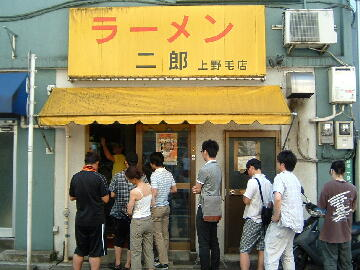
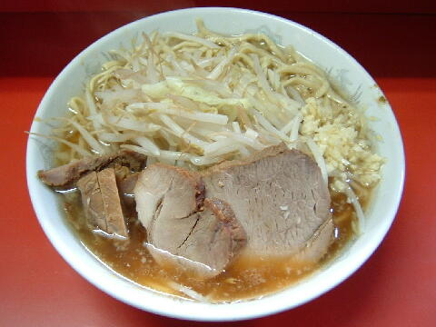

世田谷区 上野毛 1-26-16
日・祝
11：00〜14：15頃 18：00〜22：00
土 11：00〜14：30

小ラーメン 700円、小ぶた入り 800円
大ラーメン 750円、大ぶた入り 850円
生玉子 50円
缶ウーロン茶 100円
店員は、店主とバイト。
白コショウ（ギャバン）、トウガラシ。
レンゲ有。ティッシュ有。名刺無。
BGMは、FM。
トッピングは、普通。
ラーメン二郎 上野毛店 上野毛店のTwitter
「ラーメン二郎 上野毛」でヤフー検索
「ラーメン二郎 上野毛」でヤフーリアルタイム検索
「ラーメン二郎 上野毛」でグーグル検索

小ラーメン ニンニク 麺硬め
麺は、二郎にしてはやや細目で縮れ気味のプリプリした麺。
麺硬めにするとシコシコ感が加わる。
ぶたは、小ぶりだが柔らかい。運が良ければ細切れのぶたを入れてくれる。
スープは、サラリと薄目だがコクがあり美味い。そして熱い。
ヤサイは、モヤシ9：キャベツ1の割合。ゆで方はシャキ気味。
ニンニクは、香りが強い生ニンニク。
ＰＣ店